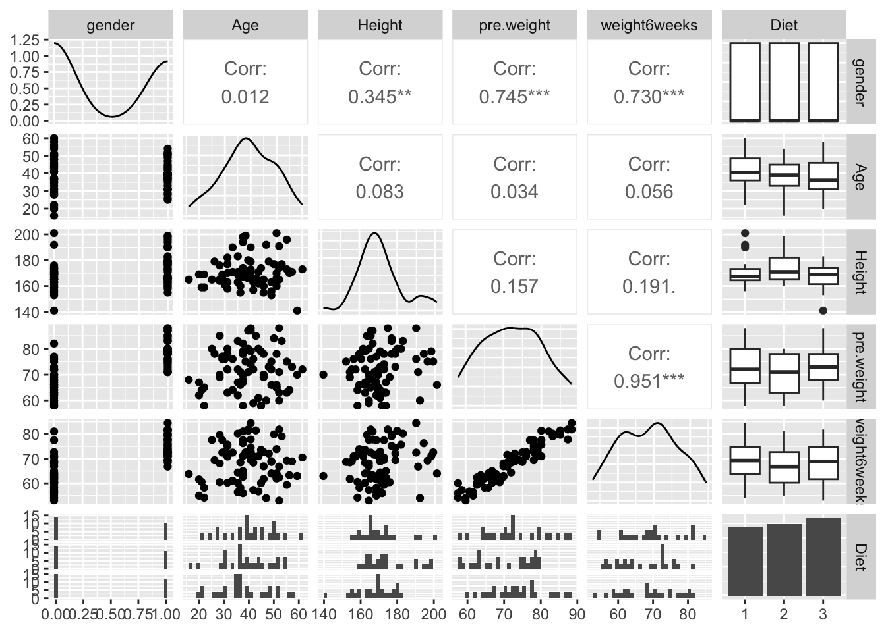
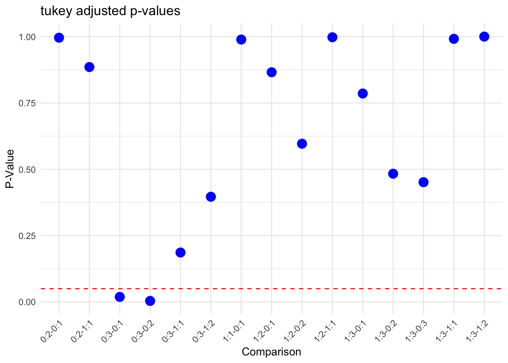

Analysis of Variance
In Class Activity
Here is some new data to play with a bit to explore one-way and two-way analysis of variance models. These data represent weight data associated with three different diet types. There are 76 observations of individuals with the following characteristics:
- Gender (0/1)
- Age (earth years. 🤓)
- Height (cm)
- Pre.weight & weight6weeks (kg)
- Diet (1,2,3)
The data are located as a CSV file named DietData.csv linked from the Canvas page. Load the data in and format things so they look correctly to you.
Exploratory Data Anlsysis
One of the first things to do is to look at the data and see if there are any obvious things. Go ahead and explore these data visually. What do you see?
Correlation between variables are mostly as expected, with strong correlations between gender and height and weight. Surprisingly diet doesn’t seem to correlate strongly with physical characteristics, and height and weight have lower correlations than I would expect.
Estimating Mean Values
Make a table of Weigth Loss by gender and diet.
1-Way Analysis of Variance
Diet Issues:
The underlying linear model.
\[ y_{ij} = \mu + \tau_{Diet, i} + \epsilon_j \]
Test the null hypothesis, \(H_O:\) There is no effect of diet on weight loss (e.g., \(\tau_{Diet-1} = \tau_{Diet-2} = \tau_{Diet-3} = 0.0\)). Is there evidence for one diet producing more weight loss than the others? Create an aov analysis and assign it to the variable fit.diet and examine its contents.
Df Sum Sq Mean Sq F value Pr(>F)
weight_loss$Diet 2 60.5 30.264 5.383 0.0066 **
Residuals 73 410.4 5.622
---
Signif. codes: 0 '***' 0.001 '**' 0.01 '*' 0.05 '.' 0.1 ' ' 1With a p-value below .01, there is sufficient reason to reject the null hypothesis and assume there is an effect for diet on weight loss.
Are they all significantly different? Try the TukeyHSD() Interpret the results.
Tukey multiple comparisons of means
95% family-wise confidence level
Fit: aov(formula = weight_loss$wt_loss ~ weight_loss$Diet, data = weight_loss)
$`weight_loss$Diet`
diff lwr upr p adj
2-1 -0.032000 -1.6530850 1.589085 0.9987711
3-1 1.848148 0.2567422 3.439554 0.0188047
3-2 1.880148 0.3056826 3.454614 0.0152020Diet 3 seems to be significantly different (p<.05) than 1 and 2, whereas 1 and 2 do not appear to be significantly different. Therefore, we probably want to see if Diet 3 is more or less effective that 1 & 2.
How much of the variation is explained? If you notice when you do a summary from a lm() (regression) model, it gives you the \(R^2\) values directly (remember \(R^2 = \frac{SS_{model}}{SS_{Error}}\)). Does summary() of your aov model give you that?
Call:
lm(formula = weight_loss$wt_loss ~ weight_loss$Diet, data = weight_loss)
Residuals:
Min 1Q Median 3Q Max
-5.3680 -1.4420 0.1759 1.6519 5.7000
Coefficients:
Estimate Std. Error t value Pr(>|t|)
(Intercept) 3.3000 0.4840 6.818 2.26e-09 ***
weight_loss$Diet2 -0.0320 0.6776 -0.047 0.96246
weight_loss$Diet3 1.8481 0.6652 2.778 0.00694 **
---
Signif. codes: 0 '***' 0.001 '**' 0.01 '*' 0.05 '.' 0.1 ' ' 1
Residual standard error: 2.371 on 73 degrees of freedom
Multiple R-squared: 0.1285, Adjusted R-squared: 0.1047
F-statistic: 5.383 on 2 and 73 DF, p-value: 0.006596Accoring to the lm model, the r-squared are pretty low (around 10%) which indicates that not a lot of the variance is explained by Diet. The aov model does not appear to give an r-squared estimate.
Since I asked the question, the answer is probably no. Why does it not do this? Probably for historical reasons, which are a bit of a pain in the backside. That being said, there are some tidy ways to fix this issue. I’m going to use the broom package which allows us to clean up (or tidy if you will) the model objects. This will take the model object and pull out all the ANOVA table stuff and put it into a tibble.
# A tibble: 2 × 6
term df sumsq meansq statistic p.value
<chr> <dbl> <dbl> <dbl> <dbl> <dbl>
1 weight_loss$Diet 2 60.5 30.3 5.38 0.00660
2 Residuals 73 410. 5.62 NA NA Now, since it is all easily accessible, we can calculate the \(R^2\) from the new model output.
[1] 0.1285269Gender:
The underlying linear model.
\(y_{ij} = \mu + \tau_{gender, i} + \epsilon_j\)
Independent of the diet, test the null hypothesis \(H_O:\) There is no difference in weight loss between genders (e.g., $*{gender-0} =* = 0.0 $). Is there evidence for one gender being significantly different than another? How much of the variation is explained (another \(R^2\) by gender)?
Df Sum Sq Mean Sq F value Pr(>F)
weight_loss$gender 1 0.3 0.278 0.044 0.835
Residuals 74 470.7 6.360
Call:
lm(formula = weight_loss$wt_loss ~ weight_loss$gender, data = weight_loss)
Residuals:
Min 1Q Median 3Q Max
-5.9930 -1.6846 -0.2041 1.7264 5.1848
Coefficients:
Estimate Std. Error t value Pr(>|t|)
(Intercept) 3.8930 0.3846 10.123 1.3e-15 ***
weight_loss$gender 0.1221 0.5836 0.209 0.835
---
Signif. codes: 0 '***' 0.001 '**' 0.01 '*' 0.05 '.' 0.1 ' ' 1
Residual standard error: 2.522 on 74 degrees of freedom
Multiple R-squared: 0.0005914, Adjusted R-squared: -0.01291
F-statistic: 0.04379 on 1 and 74 DF, p-value: 0.8348For gender, we should go ahead and reject our null hypothesis and assume that it isn’t a big factor for weight loss (large p = .835). According to our lm model for gender, very little variance looks to be explained by this variable, with an r^2 close to zero (-.01).
How do you interpret these results thus far?
One of those diets seems to do explain some sort of weight change, whereas nothing else in our data set is very compelling so far.
Do genders respond differently to diets?
\(y_{ijk} = \mu + \tau_{Diet,i} + \tau_{gender,j} + \epsilon_k\)
So here we do something a bit different. We want to simultaneously ask the following questions:
- Do diets influence weight loss?
- Do genders influence weight loss?
- Is there an interaction where different genders respond differently to different diets?
In \(R\), this is done as:
Df Sum Sq Mean Sq F value Pr(>F)
gender_wtLoss$gender 1 0.3 0.278 0.052 0.82062
gender_wtLoss$Diet 2 60.4 30.209 5.619 0.00546 **
gender_wtLoss$gender:gender_wtLoss$Diet 2 33.9 16.952 3.153 0.04884 *
Residuals 70 376.3 5.376
---
Signif. codes: 0 '***' 0.001 '**' 0.01 '*' 0.05 '.' 0.1 ' ' 1 Tukey multiple comparisons of means
95% family-wise confidence level
Fit: aov(formula = gender_wtLoss$wt_loss ~ gender_wtLoss$gender * gender_wtLoss$Diet, data = weight_loss)
$`gender_wtLoss$gender`
diff lwr upr p adj
1-0 0.1221283 -0.9480861 1.192343 0.8206233
$`gender_wtLoss$Diet`
diff lwr upr p adj
2-1 -0.03484966 -1.6215073 1.551808 0.9984761
3-1 1.84475570 0.2871469 3.402365 0.0162482
3-2 1.87960536 0.3385771 3.420634 0.0128844
$`gender_wtLoss$gender:gender_wtLoss$Diet`
diff lwr upr p adj
1:1-0:1 0.6000000 -2.2129628 3.4129628 0.9887997
0:2-0:1 -0.4428571 -3.0107291 2.1250148 0.9958151
1:2-0:1 1.0590909 -1.6782698 3.7964516 0.8656520
0:3-0:1 2.8300000 0.3052886 5.3547114 0.0191170
1:3-0:1 1.1833333 -1.4893925 3.8560592 0.7855223
0:2-1:1 -1.0428571 -3.8558199 1.7701056 0.8852416
1:2-1:1 0.4590909 -2.5093998 3.4275816 0.9975014
0:3-1:1 2.2300000 -0.5436187 5.0036187 0.1863470
1:3-1:1 0.5833333 -2.3256625 3.4923292 0.9915569
1:2-0:2 1.5019481 -1.2354126 4.2393087 0.5963201
0:3-0:2 3.2728571 0.7481458 5.7975685 0.0040103
1:3-0:2 1.6261905 -1.0465354 4.2989163 0.4833188
0:3-1:2 1.7709091 -0.9260048 4.4678230 0.3965102
1:3-1:2 0.1242424 -2.7117126 2.9601974 0.9999949
1:3-0:3 -1.6466667 -4.2779524 0.9846191 0.4513580What is the \(R^2\) for this model?
Call:
lm(formula = gender_wtLoss$wt_loss ~ gender_wtLoss$gender * gender_wtLoss$Diet,
data = weight_loss)
Residuals:
Min 1Q Median 3Q Max
-5.5091 -1.2958 0.0705 1.2159 5.4500
Coefficients:
Estimate Std. Error t value Pr(>|t|)
(Intercept) 3.0500 0.6197 4.922 5.49e-06
gender_wtLoss$gender1 0.6000 0.9600 0.625 0.5340
gender_wtLoss$Diet2 -0.4429 0.8764 -0.505 0.6149
gender_wtLoss$Diet3 2.8300 0.8616 3.284 0.0016
gender_wtLoss$gender1:gender_wtLoss$Diet2 0.9019 1.3395 0.673 0.5030
gender_wtLoss$gender1:gender_wtLoss$Diet3 -2.2467 1.3145 -1.709 0.0919
(Intercept) ***
gender_wtLoss$gender1
gender_wtLoss$Diet2
gender_wtLoss$Diet3 **
gender_wtLoss$gender1:gender_wtLoss$Diet2
gender_wtLoss$gender1:gender_wtLoss$Diet3 .
---
Signif. codes: 0 '***' 0.001 '**' 0.01 '*' 0.05 '.' 0.1 ' ' 1
Residual standard error: 2.319 on 70 degrees of freedom
Multiple R-squared: 0.2009, Adjusted R-squared: 0.1438
F-statistic: 3.519 on 5 and 70 DF, p-value: 0.006775Which Model is Best?
How would you compare the models you generated? How do you interpret the findings?
Explain, in words, your findings and interpretation of these findings

Overall, my interpretation is that diet is almost certainly the most important factor regarding weight loss. Interestingly, the tukey chart above for the two-way ANOVA for gender and diet indicates that men were more the most responsive to diet 3. This is seen via the differences between the different diets for men (I added the red line to represent a .05 significance level), as well as with the relatively high p-value of around .5 for diet 3 for men vs women (seen on the x axis as 1:3-0:3). My guess would be that men generally eat more protein (or slightly less probable to me being carbs or sugar) than women, and that diet 3 is a reduced protein diet and that it has a more significant impact on men. I’d be interested to see how exercise would impact weight loss, and whether there were significant differences between men and women in terms of weight loss when it is added as a variable.